Collections
Quick Indian Recipes
Half an hour or less, counting the chopping as well as the cooking. Where a dish also wants soaking or resting time, the card says so.
 Akoori on Toast
Akoori on Toast
 Akuri
Akuri
 Aloo Chaat
Aloo Chaat
 Aloo Pitika
Aloo Pitika
 Aloo Pyaaz ki Sabzi
Aloo Pyaaz ki Sabzi
 Aloo ke Gutke
Aloo ke Gutke
 Aloo ki Bhujia
Aloo ki Bhujia
 Badi Chura
Badi Chura
 Bajre ki Raab
Bajre ki Raab
 Bataka Poha
Bataka Poha
 Batata Bhaji
Batata Bhaji
 Beans Poriyal
Beans Poriyal
 Beetroot Poriyal
Beetroot Poriyal
 Begun Bhaja
Begun Bhaja
 Bhel Puri
Bhel Puri
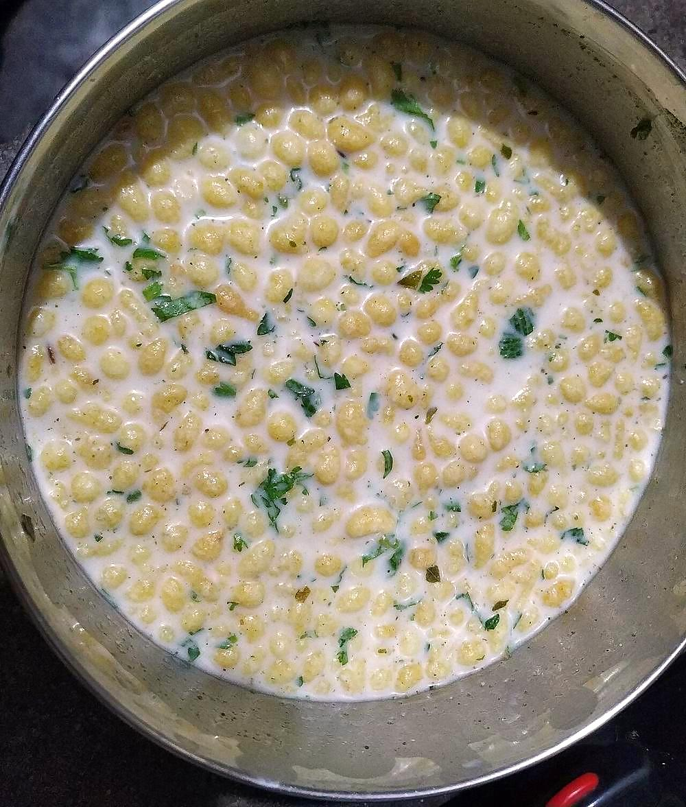
Boondi Raita Cabbage Poriyal
Cabbage Poriyal
 Cabbage Thoran
Cabbage Thoran
 Cheera Thoran
Cheera Thoran
 Chettinad Meen Varuval
Chettinad Meen Varuval
 Coconut Chutney
Coconut Chutney
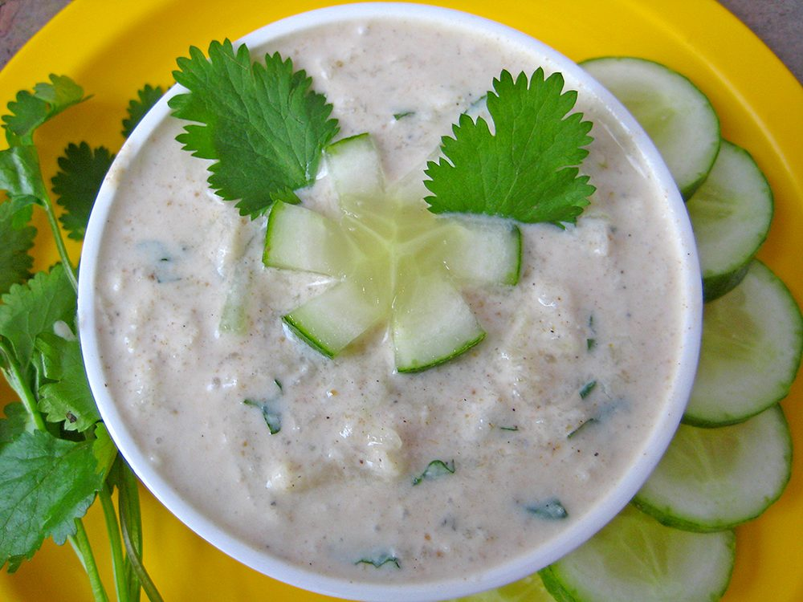
Cucumber Raita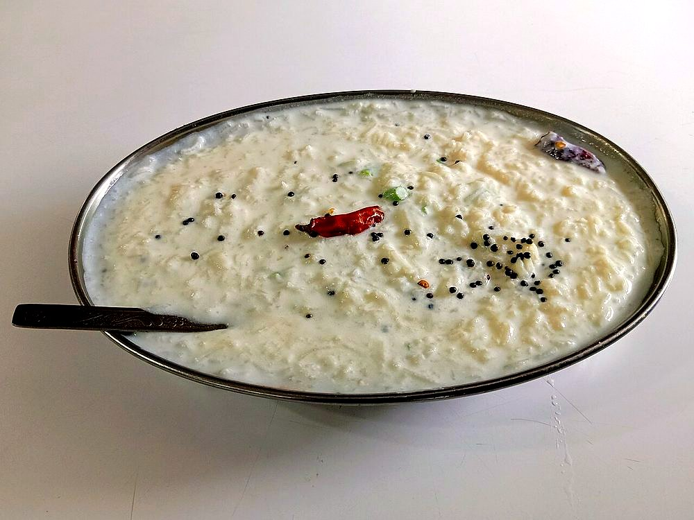
Curd Rice Dadpe Pohe
Dadpe Pohe
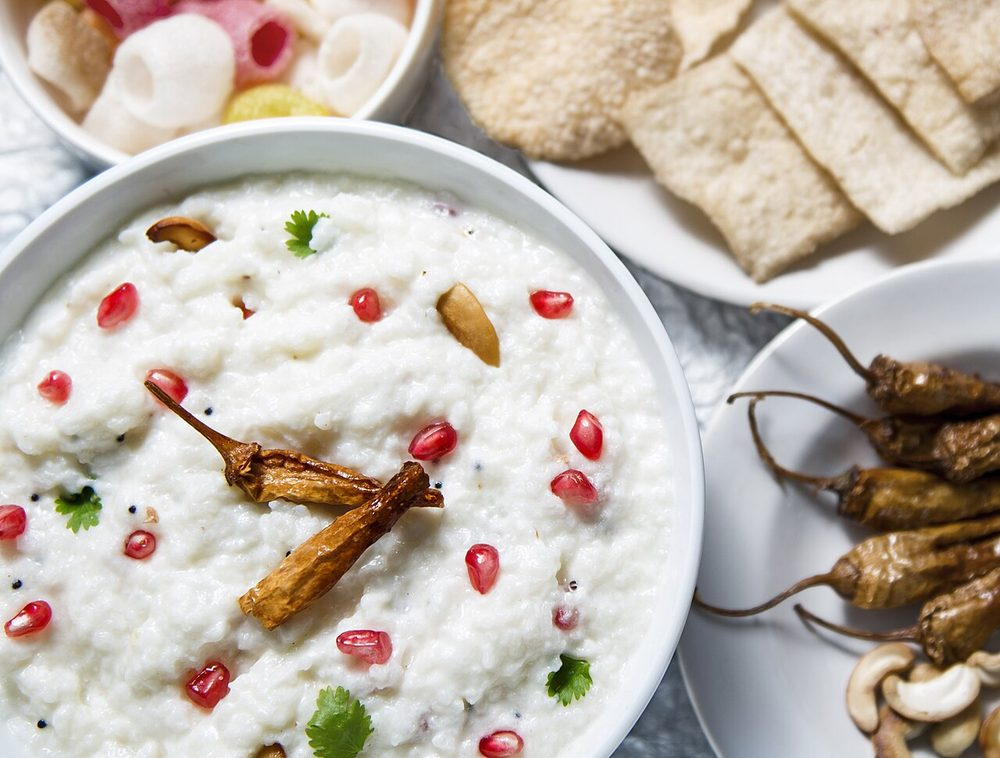
Dahi Chura Gud Dahi Pakhala
Dahi Pakhala
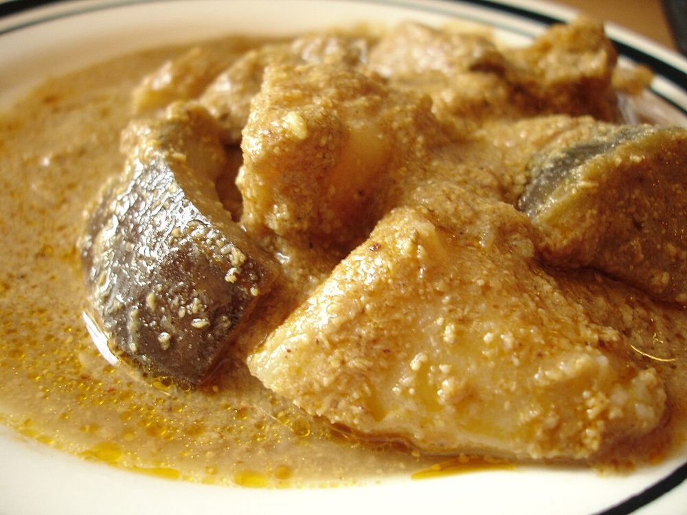
Dahi Wale Aloo Devilled Kidneys
Devilled Kidneys
 Egg Bhurji
Egg Bhurji
 Gujarati Kadhi
Gujarati Kadhi
 Haak
Haak
 Hirvi Mirchi Cha Thecha
Hirvi Mirchi Cha Thecha
 Jeera Rice
Jeera Rice
 Kanda Poha
Kanda Poha
 Keerai Masiyal
Keerai Masiyal
 Kesari Bath
Kesari Bath
 Khichdi Ka Khatta
Khichdi Ka Khatta
 Khichu
Khichu
 Kismur
Kismur
 Kosambari
Kosambari
 Kullu Trout
Kullu Trout
 Kumaoni Raita
Kumaoni Raita
 Lehsun ki Chutney
Lehsun ki Chutney
 Lemon Rice
Mango Lassi
Lemon Rice
Mango Lassi
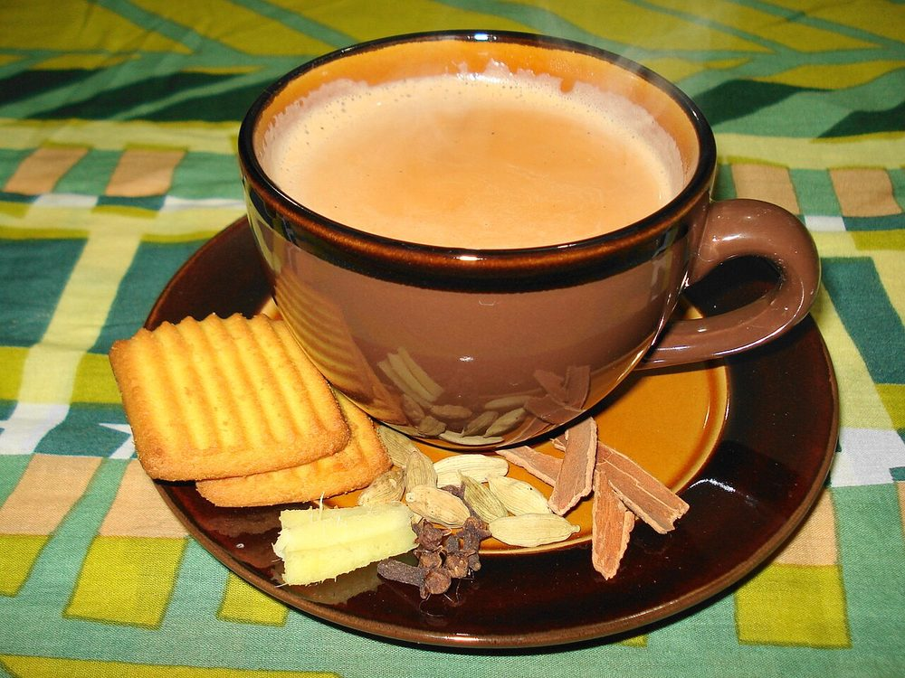
Masala Chai Meen Varuthathu
Meen Varuthathu
 Mint-Coriander Chutney
Mint-Coriander Chutney
 Mujh Chetin
Mujh Chetin
 Namkeen Sattu Sharbat
Namkeen Sattu Sharbat
 Paneer Bhurji
Paneer Bhurji
 Pazham Pori
Pazham Pori
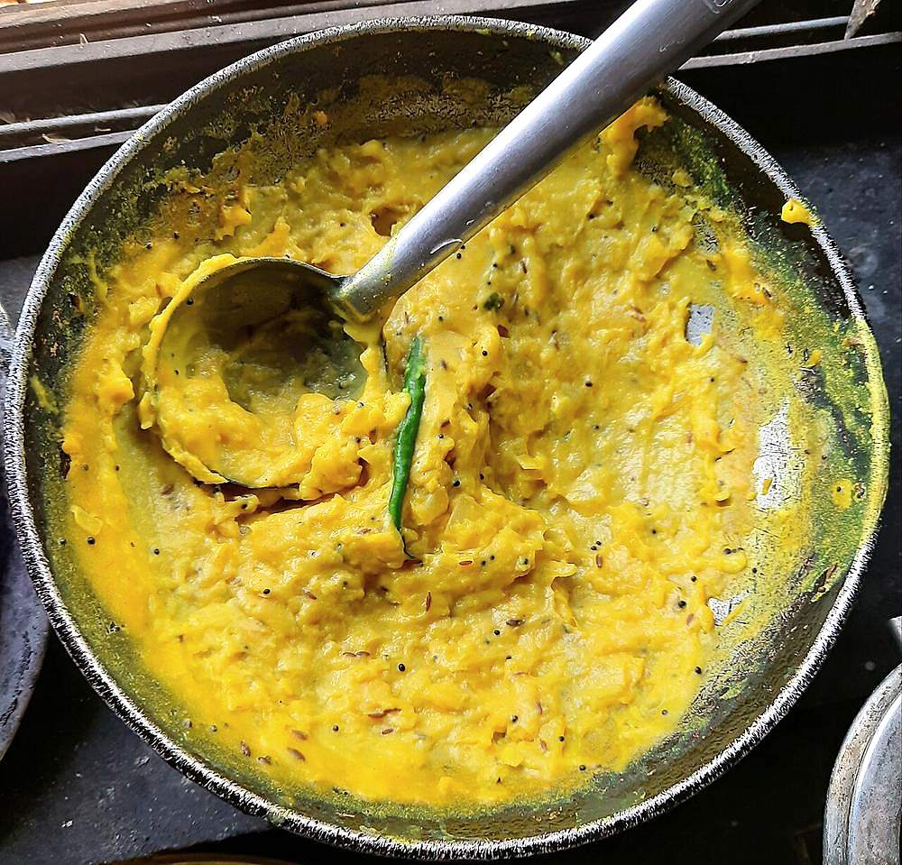
Pithla Poita Bhat
Poita Bhat
 Ragi Mudde
Ragi Mudde
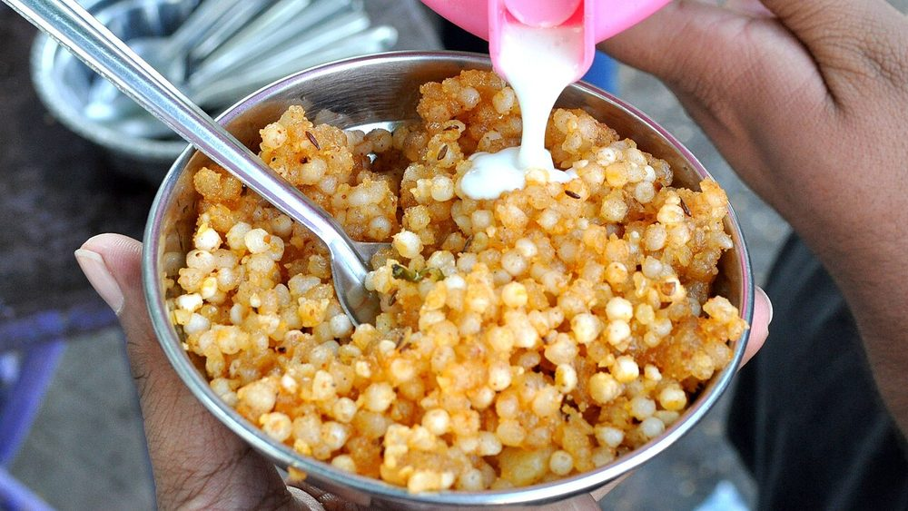
Sabudana Khichdi Saga Bhaja
Saga Bhaja
 Saja Pakhala
Saja Pakhala
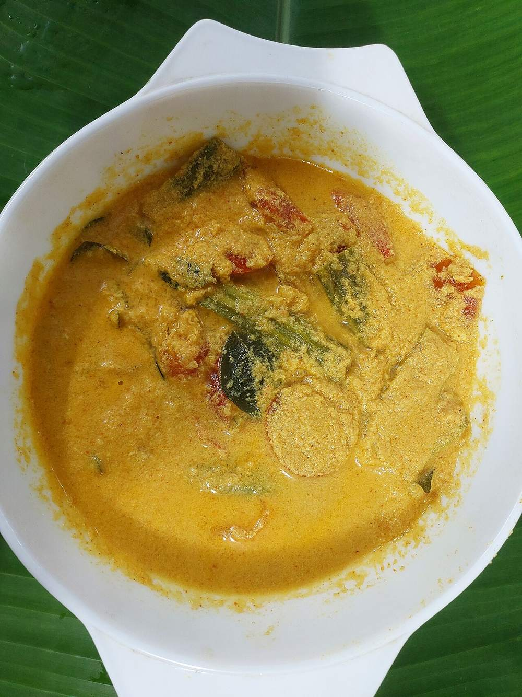
Sambharam Sev Tameta nu Shaak
Sev Tameta nu Shaak
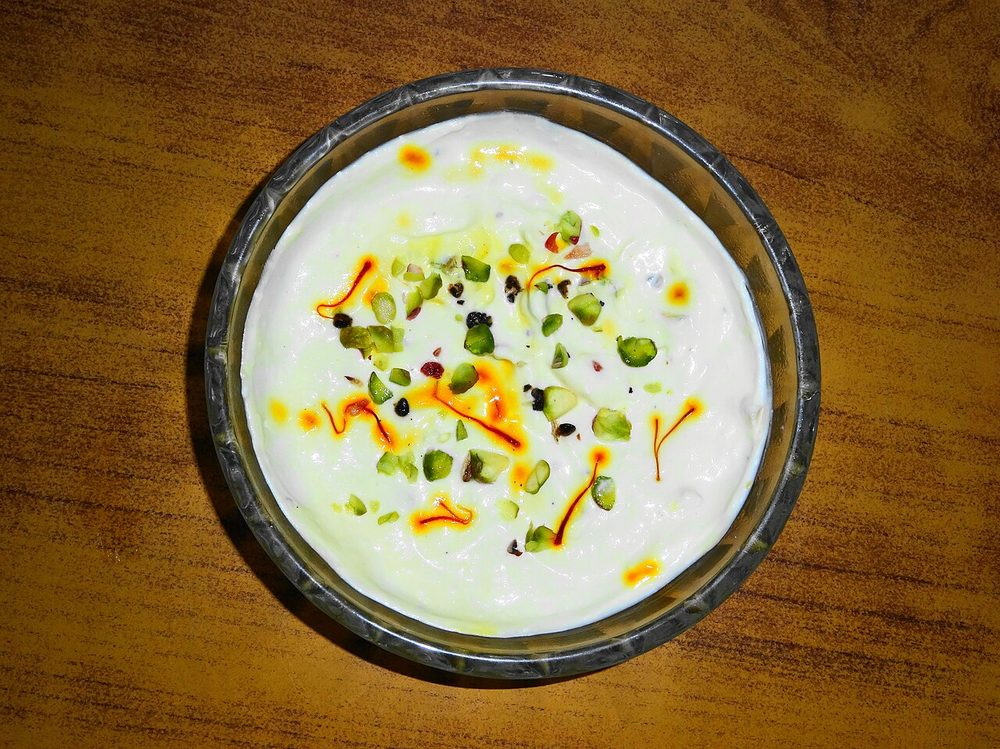
Shrikhand Silbatte ki Chutney
Silbatte ki Chutney
 Singju
Singju
 Sol Kadhi
Sol Kadhi
 Solkadhi
Solkadhi
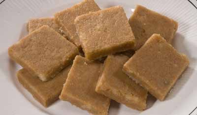
Sukhdi Sweet Corn Soup
Sweet Corn Soup
 Sweet or Salted Lassi
Sweet or Salted Lassi
 Tamatar Chokha
Tamatar Chokha
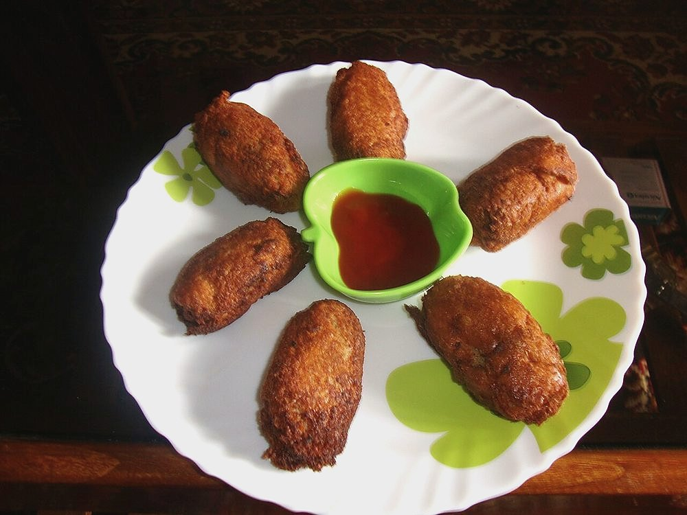
Tamota Par Eeda Thambuttu
Thambuttu
 Thengai Sadam
Thengai Sadam
 Til Ki Chutney
Til Ki Chutney
 Tomato Chutney
Tomato Chutney
 Upma
Upma
 Vagharelo Bhaat
Vagharelo Bhaat
 Zunka
Zunka
By region: Anglo-Indian · Bengali · Bihari · Goan · Gujarati · Hyderabadi · Indo-Chinese · Karnataka · Kashmiri · Kerala · Maharashtrian · Northeast Indian · Odia · Pahari · Parsi · Punjabi · Rajasthani · Tamil Nadu
Other collections: Healthy Indian Recipes · Vegan Indian Recipes · Vegetarian Indian Recipes · Gluten-Free Indian Recipes · Dairy-Free Indian Recipes · No Onion No Garlic Indian Recipes · Indian Soup Recipes